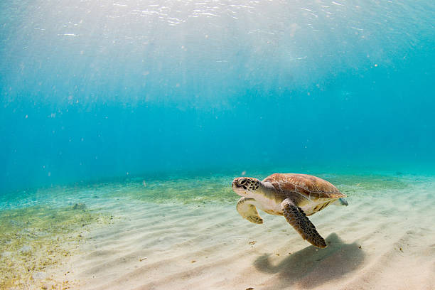
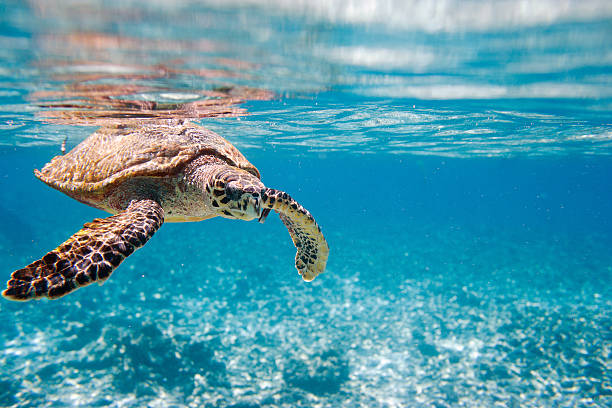

Bentota Turtle Hatchery
There are many turtle hatcheries in Sri Lanka.One of them is Bentota turtle hatchery.It is locate in Bentota.Many tourists and local citizens visit that place.It is one of the main tourist attractions in Sri Lanka. turtle hatchery is responsible for increasing turtle habitat of Sri Lanka and protect Turtle habitat in Sri lanka.Bentota turtle hatchery use many methods and techniques to increase and protect turtle habitat in Sri Lanka.Bentota turtle hatchery is one of the main and important turtle hatcheries in Sri lanka.It is using mnay methods like collecting turtle eggs,protecting turtle babies to protect the turtle habitat and increase the turtle habitat of Sri Lanka.



